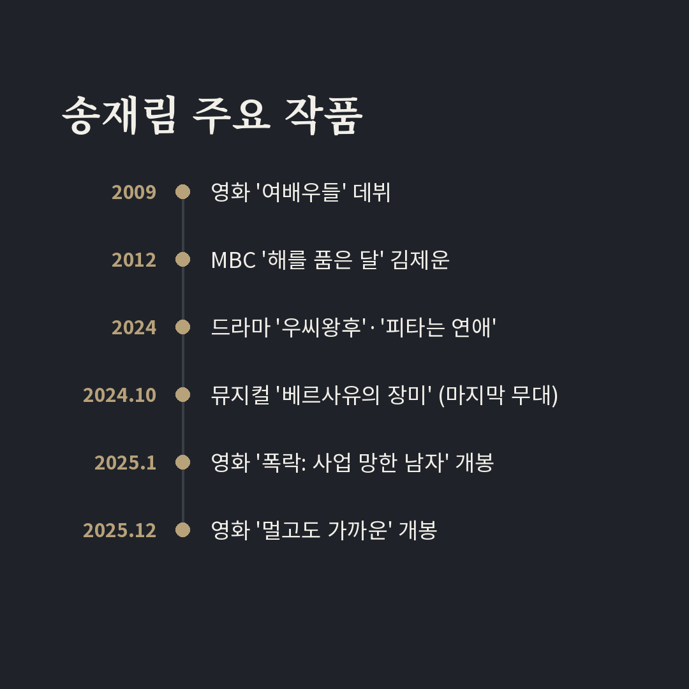
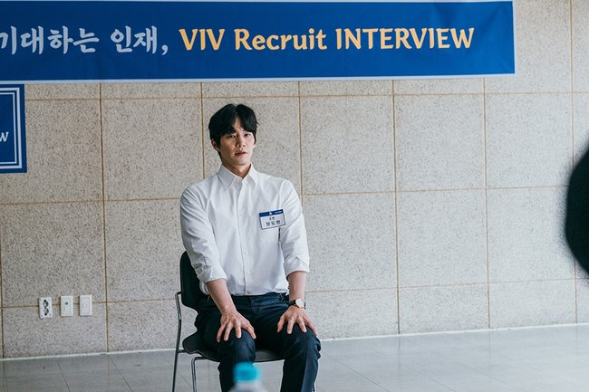
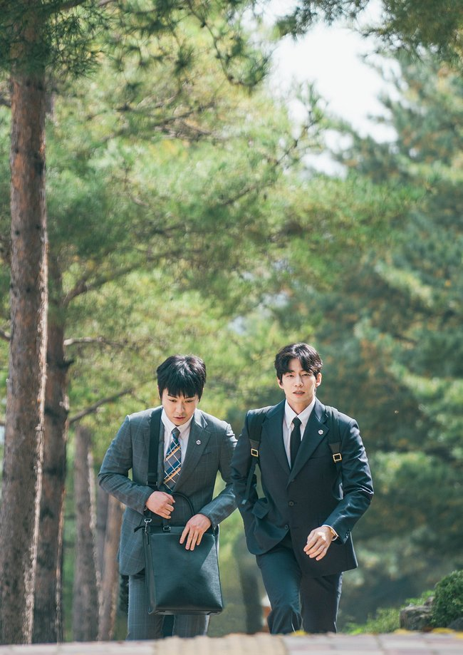
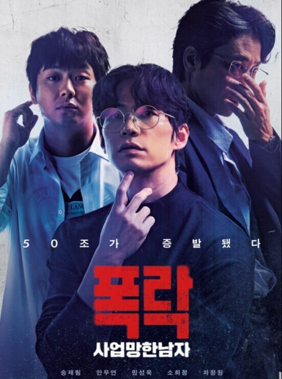
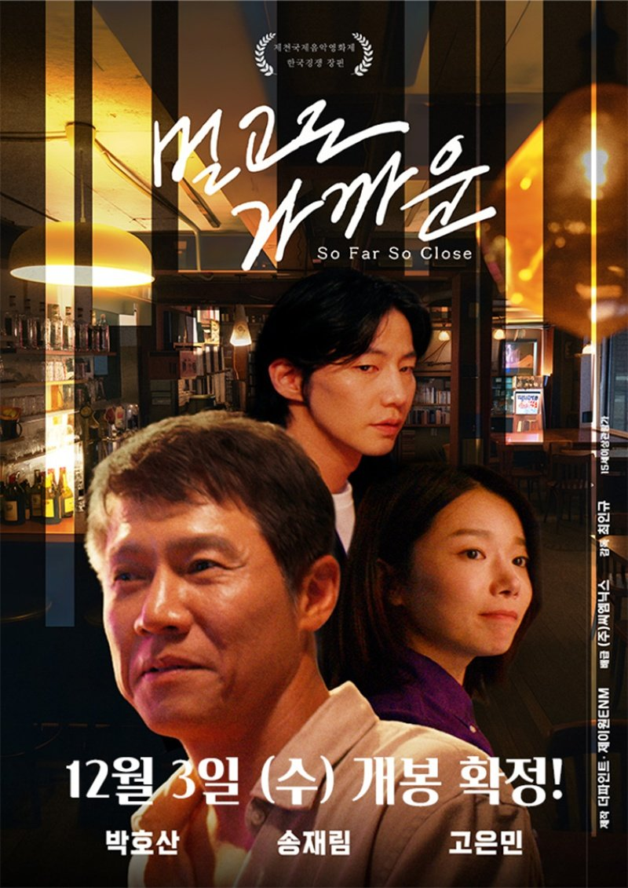

오늘 송재림을 다시 본다면 어떤 작품부터 꺼내 볼까요. 11월 12일은 배우 송재림의 2주기였어요. 2024년 11월 12일, 서른아홉에 세상을 떠났죠. 기사마다 흩어져 있던 출연작을 시기 순서로 묶어 다시 볼 목록을 만들었어요.
📷 사진 1 자리
▲ 2019년 8월 KBS 드라마 제작발표회의 송재림 / 사진: NewsInStar / CC BY 3.0 / 위키미디어 공용
모델에서 호위무사 '운'으로
1985년생 송재림은 패션모델로 먼저 일했어요. 연기는 2009년 영화 '여배우들'로 시작했고요.
📷 사진 2 자리
많은 사람이 얼굴을 기억하게 된 건 2012년 MBC '해를 품은 달'이에요. 왕 이훤 곁을 지키던 호위무사 김제운, 극 중에서 '운'으로 불린 인물이죠. 송재림을 처음 찾아보는 사람이라면 이 작품이 출발점으로 가장 무난해요.
진지한 얼굴과 다른 얼굴
이후 드라마 이력은 꽤 길어요. '꽃미남 라면가게', '투윅스', '감격시대', '착하지 않은 여자들', '우리 갑순이', '시크릿 마더'가 여러 매체 출연작 목록에 공통으로 오른 작품이에요. 사극 속 무사 한 명으로 기억하기엔 목록이 꽤 길죠.
📷 사진 3 자리
▲ 영화 '폭락: 사업 망한 남자' 속 송재림 · 사진=무암 제공
배우 송재림과 다른 모습을 보고 싶다면 MBC 예능 '우리 결혼했어요'가 있어요. 배우 김소은과 가상 부부로 나왔고, 드라마 속 진지한 이미지와 달리 장난스럽고 편한 모습을 보여 줬어요.
📷 사진 4 자리
▲ 영화 '폭락: 사업 망한 남자' 스틸 · 사진=무암 제공
마지막 무대, 그리고 두 편의 영화
2024년은 쉬지 않고 일한 해였어요. 드라마 '우씨왕후'와 '피타는 연애'에 나왔고, 10월까지 뮤지컬 '베르사유의 장미' 무대에 섰어요. 이 공연이 생전 마지막 무대가 됐어요.
📷 사진 5 자리
▲ 영화 '폭락: 사업 망한 남자' 스틸 · 사진=무암 제공
세상을 떠난 뒤에도 영화 두 편이 관객을 찾아왔어요. 먼저 2025년 1월 영화 '폭락: 사업 망한 남자'가 개봉했어요. 포스터에는 '50조가 증발했다'는 문구가 크게 적혀 있어요.
📷 사진 6 자리
▲ 영화 '폭락: 사업 망한 남자' 포스터 · 사진=무암 제공
📷 사진 7 자리
▲ 영화 '폭락: 사업 망한 남자' 스틸 · 사진=무암 제공
마지막 영화는 같은 해 12월 3일 개봉한 '멀고도 가까운'이에요. 공식 포스터에는 박호산, 고은민과 함께 송재림의 이름이 나란히 올라 있어요. 두 편 모두 이제는 다시 나오지 않을 그의 마지막 연기예요.
📷 사진 8 자리
▲ 영화 '멀고도 가까운' 공식 포스터. 박호산·송재림·고은민 · 사진=씨엠 닉스 제공
출연작을 시기별로 늘어놓고 보니, 마지막 1년 사이에만 드라마 두 편·뮤지컬·영화 두 편이 겹쳐 있었다는 게 가장 먼저 눈에 들어왔어요. 한 편만 고른다면 시작점인 '해를 품은 달'과 마지막 '멀고도 가까운'을 이어 보는 순서를 권하고 싶어요.
처음 얼굴을 알린 '해를 품은 달'부터 마지막 영화 '멀고도 가까운'(2025년 12월 개봉)까지, 이 순서로 보면 송재림이 걸어온 길이 한 번에 이어져요.




